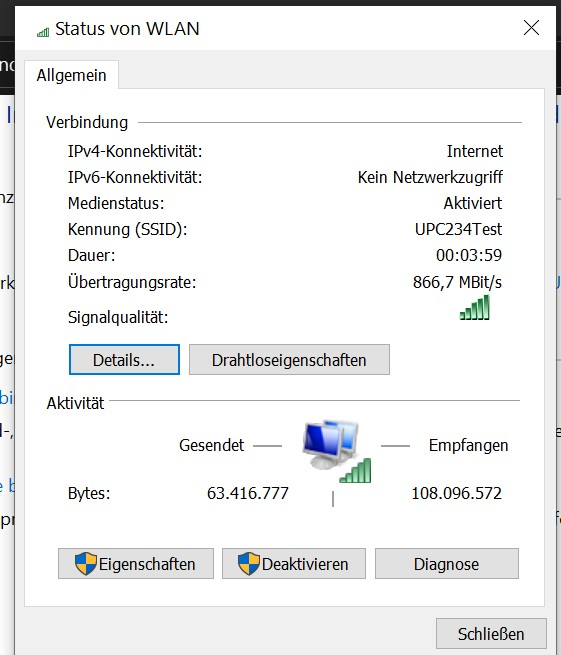

Auf alle Fälle - DANKE für dein umfangreiches Feedback!!!!

Hallo Community,
ich frag hier nach, weil ich mit meinem Latein langsam am Ende bin (sollte ich das falsche Unterforum erwischt haben, bitte ich um Verzeihung und ggf. Verschiebung):
Ich bin seit Ewigkeiten Kabelinternet-Kunde der ehemaligen UPC, und "durfte" heute den alten Technicolor-Router im Shop gegen die neue Connect Box tauschen. Seitdem hab ich enorme Probleme mit (manchen) WLAN-Verbindungen.
Nach Start und Einrichtung der Box hab ich meine kabelgebundenen Geräte überprüft und war sofort problemlos online. Mein Laptop, auf dem Kubuntu läuft, konnte sich auch anstandslos mit dem WLAN verbinden.
Unsere Handys und das Surface 4 Pro-Notebook mit Windows10 bekomme ich seitdem jedoch einfach nicht ans kabellose Netz.
Bei den Handys (beides Android-Geräte; verschiedene Hersteller; weniger als 3 Jahre alt; mit allen aktuellem Updates versehen) wird das Passwort zwar akzeptiert und gespeichert, Verbindung wird jedoch keine hergestellt. In der WIFI-Auswahl steht "Saved" unter der SSID, ein erneuter Verbindungsversuch führt zu einem Authentifizierungsstart, jedoch ohne Erfolg.
Beim Windows10-Laptop klappt die Verbindung sogar, jedoch steht dann "Kein Internet, gesichert" im Netzwerkstatus, er scheint auch nicht in der Web-Oberfläche der Connect Box unter "Verbundene Geräte" auf.
Ich hab inzwischen etliches probiert, unter anderem:
Ich weiß wirklich nicht mehr weiter. Die Menschen der Magenta-Hotline sind auch überfragt bis desinteressiert und pochen darauf, dass es an meinen Endgeräten liegen muss. Möglich, aber meines Erachtens unwahrscheinlich - alle anderen WLANs haben sie bislang noch problemlos gepackt.
Weiß jemand Rat? Oder zumindest eine Stoßrichtung, in die ich nachforschen könnte?
Vielen Dank im Voraus!
/Nachtrag vom Folgetag: Ich hab heute endlich einen wirklich kompetenten, freundlichen und interessierten Mitarbeiter der Serviceline an den Apparat bekommen, der sich mein Problem angehört und es mit mir verifiziert bzw. etliche meiner Lösungsversuche wiederholt und eigene angestellt hat. Nach Rücksprache seinerseits mit dem 2nd-Level-Support wurde entschieden, dass offenbar auch das getauschte Modem ein Problem hat (u.a. konnte das Gerät von seiner Seite aus gepingt werden, eine tatsächliche Verbindung konnte er jedoch nicht herstellen).
Nachdem es leider auch damit nicht besser wurde, hat man mir ein anderes Modem angeboten (v/o "Arris" - ich glaube im Normalfall Gigabitkunden vorbehalten?), und siehe da: Mein Problem war sofort von selbst verschwunden!
Ich kann also nicht sagen, ob es letztendlich an einer defekten Herstellungscharge, der Firmware oder ähnlichem lag, aber ich bin wieder online, und das nach nur wenigen Stunden in der Hotline-Warteschleife und am Weg zum/vom Shop.
Die Frage kann also als gelöst betrachtet werden. Danke!
Auf alle Fälle - DANKE für dein umfangreiches Feedback!!!!

On 1/18/2020 at 12:23 AM, slint said:Ich kann also nicht sagen, ob es letztendlich an einer defekten Herstellungscharge, der Firmware oder ähnlichem lag, aber ich bin wieder online, und das nach nur wenigen Stunden in der Hotline-Warteschleife und am Weg zum/vom Shop.
Vielleicht eine Kombination aus defekter Hardware und schlechter Firmware?
 ...
...
Auf jeden Fall gut, dass es bei dir nun funktioniert

Vielen Dank für die auswührliche Antwort

Hallo Slint
Ich bin auch emaliger UPC Kunde.
Seit dem ich damals auf den GB Tarif gewechselt habe gibt es nur Probleme mit meiner Wlan Geschwindigkeit.
Ich hatte den Tarif mit 300mb download. Mit den Modem von UPC kam ich mit Lan auf 280-290 MB und Wlan zwischen 230-250 MB.
Sogar nach der Umstellung und noch mit den alten Modem bin ich im Wlan auf 300-350 mb gekommen.
Ich hab dann nur das alte Modem gegen das neue ersetzt. Und seit dem ist mein Wlan im Keller. Lan funkt super mit 900-950 Mb. Aber Wlan ist unter aller Sau. 80-120 Mb wenn ich viel Glück habe.
Nach Anruf bei Magenta und tausch des Modems,hat sich rein gar nichts geändert.
Wenn man bei Magenta dann anruft kommt natürlich dann immer der gleiche Satz. " Es liegt nicht bei ihnen sonder ich mach was falsch oder meine Geräte sind schuld daran". Ich bin sicher kein Profi habe aber natürlich mit den Kanälen versucht was zu ändern auch wider auf Werkseinstellung zurück gesetzt aber es tut sich rein gar nichts.
Leider muss ich auch immer wider feststellen das man wirklich so wie du echt Glück haben muss einen kompetenten Mitarbeiter ans Telefon zu bekommen.
Das geht oft von keine Ahnung bis zum völligen Desinteresse von meinen Problem.
Ich hänge mal ein Foto an und vielleicht kann mir ja jemand sagen ob ich mit meinen verdacht richtig liege.
Wenn ich auf Status Wlan geh und mir dort die Übertragungsrate ansehe nehm ich mal an das die Geschwindigkeit eigentlich toll wäre.
Oder täusch ich mich da und das hat nichts damit zu tun ?
Hoffe es kann mir wär einen Tipp geben,den ich bin echt schon genervt.

7 hours ago, Peter1965 said:Und seit dem ist mein Wlan im Keller.
Egal mit welchen Geräten? Die frage ist auch ob deine Geräte die Geschwindigkeit unterstützen? ... Sprich die WLAN Adapter, etc ...
Der Windows Anzeige würde ich sowieso nie trauen
 ...
...
Aber eventuell liegt es auch wirklich an der Hardware. Hast du einen anderen Router, den du zum Testen dahinter hängen kannst?
vor 15 Stunden schrieb MarioM:Egal mit welchen Geräten? Die frage ist auch ob deine Geräte die Geschwindigkeit unterstützen? ... Sprich die WLAN Adapter, etc ...
Der Windows Anzeige würde ich sowieso nie trauen
...
Aber eventuell liegt es auch wirklich an der Hardware. Hast du einen anderen Router, den du zum Testen dahinter hängen kannst?
Ja egal mit welchen Gerät. Sind 3 Surface Geräte. Und wie auch schon in meinen Artikel beschrieben beim alten Modem bin ich genau mit den selben Geräten auf fast 400Mb gekommen. Ich wär schön glücklich würde ich das jetzt auch erreichen. Ich habe natürlich mit den Lapi dann auch bei einen Freund getestet der auch eine sehr gute Leitung hat und bin dort ohne Probleme auf 300Mb gekommen.
5 hours ago, Peter1965 said:Ja egal mit welchen Gerät. Sind 3 Surface Geräte. Und wie auch schon in meinen Artikel beschrieben beim alten Modem bin ich genau mit den selben Geräten auf fast 400Mb gekommen. Ich wär schön glücklich würde ich das jetzt auch erreichen. Ich habe natürlich mit den Lapi dann auch bei einen Freund getestet der auch eine sehr gute Leitung hat und bin dort ohne Probleme auf 300Mb gekommen.
Naja dann liegt es aber eventuell wirklich an der Hardware
 Vorallem, wenn es via LAN funktioniert ...
Vorallem, wenn es via LAN funktioniert ...
vor 23 Stunden schrieb MarioM:Naja dann liegt es aber eventuell wirklich an der Hardware
Vorallem, wenn es via LAN funktioniert ...
Nach zirka einer Stunde Telefonieren mit der Hotline und nach Optimierungen des Modems von Magenta aus, bekomme ich jetzt das dritte mal ein neues Modem:-( Mal sehen ob es diesmal dann funkt. Wie sagt man so schön "Alle guten Dinge sind drei". Naja dann sehen wir mal.
On 29.2.2020 at 7:43 AM, Peter1965 said:Nach zirka einer Stunde Telefonieren mit der Hotline und nach Optimierungen des Modems von Magenta aus, bekomme ich jetzt das dritte mal ein neues Modem:-( Mal sehen ob es diesmal dann funkt. Wie sagt man so schön "Alle guten Dinge sind drei". Naja dann sehen wir mal.
Oh zum dritten Mal nun schon
 ... wir sind gespannt, halte uns bitte am Laufenden ob es mit dem neuen Modem schlussendlich besser funktioniert
... wir sind gespannt, halte uns bitte am Laufenden ob es mit dem neuen Modem schlussendlich besser funktioniert
Hi Mario
Halte euch natürlich gern am laufenden.
Habe jetzt das dritte mal ein neues Modem bekommen. Nur fühl ich mich jetzt vollkommen ***********t.
Da ich ja den Gb Tarif habe gibt es ja nur das eine Modem das auch damit zurecht kommt. Und wie schon geschrieben beim Lan hatte ich auch nie ein Problem.
Und jetzt wird es lustig. Sie haben mir einfach das andere Modem geschickt das ja laut Technik Hotline und Shop Mitarbeiter mit den 1 GB gar nicht zurecht kommt.
Das Positive daran ist das ich jetzt auch den Beweis habe das weder meine Gräte noch ich Schuld daran sind.
Ich komme jetzt beim Wlan auf 500Mb. Nur leider komm ich bein Lan auch nur auf 500MB, wo ich ja beim anderen Modem beim Lan immer zwischen 900-960 MB gekommen bin.
Ich werde mich jetzt in den nächsten Tagen mit der Hotline noch mal in Verbindung setzten und mal sehen was die dazu sagen.
On 23.3.2020 at 7:50 AM, Peter1965 said:Und jetzt wird es lustig. Sie haben mir einfach das andere Modem geschickt das ja laut Technik Hotline und Shop Mitarbeiter mit den 1 GB gar nicht zurecht kommt.
Das ist aber auch heftig
 einfach ein Gerät zu senden, dass 1GB gar nicht unterstützt ...
einfach ein Gerät zu senden, dass 1GB gar nicht unterstützt ...
On 23.3.2020 at 7:50 AM, Peter1965 said:Ich werde mich jetzt in den nächsten Tagen mit der Hotline noch mal in Verbindung setzten und mal sehen was die dazu sagen.
Ich hoffe du bekommst die richtige Hardware im Endeffekt doch noch ..
vor 3 Minuten schrieb MarioM:Das ist aber auch heftig
einfach ein Gerät zu senden, dass 1GB gar nicht unterstützt ...
Ich hoffe du bekommst die richtige Hardware im Endeffekt doch noch ..
Gestern angerufen.
Tzja was soll ich sagen. Ausreden nur Ausreden.
Ich hab den Herrn am Tel gesagt das das ich mit den Wlan jetzt eigentlich zufrieden bin nur das ich eben beim Lan jetzt nicht mehr auf die beim anderen Modem erreichte Geschwindigkeit komme. Seine Antwort darauf"Dann tauschen wir das Modem nochmal" Ich darauf" naja und dann hab ich beim Lan wieder meine Geschwindigkeit aber eben nicht beim Wlan". Dann nur noch ausreden, naja beim Wlan muss man vieles beachten und sollte es so sein soll ich anrufen und wir machen alle möglichen Tests. Obwohl ich gesagt und auch bewiesen habe das es weder an mir noch an meinen Geräten liegt,den mit den jetzigen Modem bin ich ja bei Wlan mit 500 mb zufrieden.
Ich sagte dann auch ok lassen wir es so wie es ist,vielleicht kann man sich ja beim finanziellen einigen da ich ja für das GB Paket bezahle.
Er hat das nicht mal in erwegung gezogen.
Ich hab echt die Schnauze langsam voll(sorry wegen diesen ausdruck)